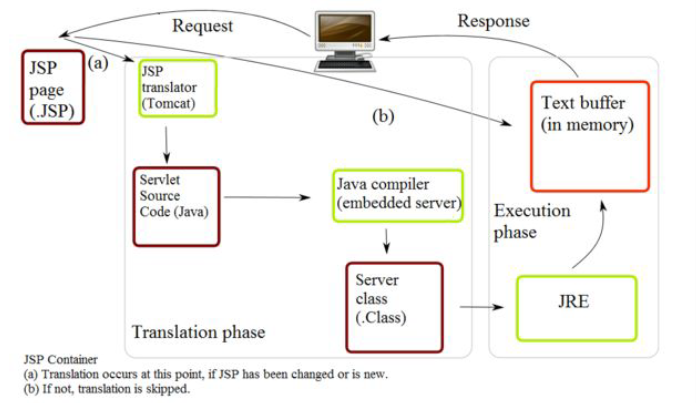
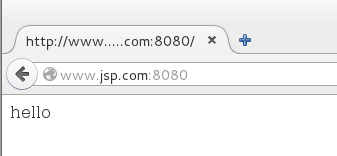
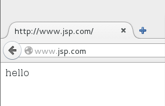
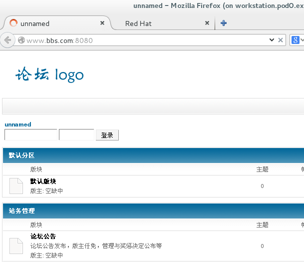
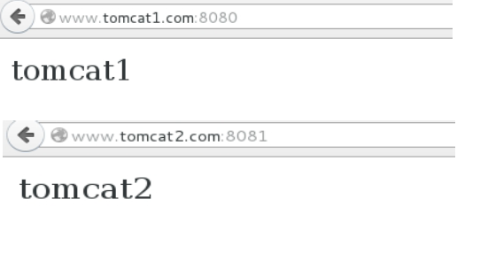

TOMCAT配置文档 1.Tomcat简介 Tomcat是一个免费的开源的Serlvet容器，它是Apache基金会的Jakarta项目中的一个核心项目，由Apache、Sun和其他一些公司及个人共同开发而成。由于有了Sun的参与和支持，最新的Servlet和JSP规范总能在Tomcat中得到体现。
简单来说apache/tomcat/servlet 这几者的关系就像：apache 是一辆车，这辆车上可以装php等物件，但是不能直接用来装像servelet 这样的水，想要装水怎么办，找个像tomcat 这样的桶。Tomcat 不能独立运行，因为真正用来解释java 页面的是jvm 程序，由tomcat 来调用jvm。

最初被发布出来的版本是Tomcat 3.0.x，当前的最新开发版本是9.0.课程环境中使用8.0 版本为例。
tomcat 官网：http://tomcat.apache.org/
2.TOMCAT的安装过程 1.安装jdk，tomcat本身是由java语言开发出来，需要有java虚拟机的环境才能够正常运行。
[root@servera tomcat]# rpm -ivh jdk-7u79-linux-x64.rpm
2.安装tomcat
[root@servera tomcat]# mkdir /usr/local/tomcat # 创建tomcat的程序文件存放位置 [root@servera tomcat]# tar -xf apache-tomcat-8.0.24.tar.gz -C /usr/local/tomcat # 这里采用的是tomcat的8.0的版本，直接解压进/usr/local/tomcat目录下。 [root@servera tomcat]# cd /usr/local/tomcat [root@servera tomcat]# ls apache-tomcat-8.0.24 [root@servera tomcat]# cd apache-tomcat-8.0.24/ [root@servera apache-tomcat-8.0.24]# pwd /usr/local/tomcat/apache-tomcat-8.0.24 # 该目录为tomcat服务的主目录
3.tomcat的基本结构
[root@servera apache-tomcat-8.0.24]# ls bin lib logs RELEASE-NOTES temp work conf LICENSE NOTICE RUNNING.txt webapps
bin
lib
logs
命令所在位置（包含状态控制脚本）
库文件所在位置
日志所在位置
conf
temp
work
配置文件所在位置
临时目录
工作目录
webapps
默认网站根目录存放位置
4.tomcat的启动和关闭
1）启动：
[root@servera bin]# export JAVA_HOME=/usr/java/jdk1.7.0_79/ # 启动之前必须通过JAVA_HOME变量告知jdk所在路径 [root@servera bin]# ls bootstrap.jar daemon.sh startup.sh catalina.bat digest.bat tomcat-juli.jar catalina.sh digest.sh tomcat-native.tar.gz catalina-tasks.xml setclasspath.bat tool-wrapper.bat commons-daemon.jar setclasspath.sh tool-wrapper.sh commons-daemon-native.tar.gz shutdown.bat version.bat configtest.bat shutdown.sh version.sh configtest.sh startup.bat [root@servera bin]# ./startup.sh # 调用启动脚本 Using CATALINA_BASE: /usr/local/tomcat/apache-tomcat-8.0.24 Using CATALINA_HOME: /usr/local/tomcat/apache-tomcat-8.0.24 Using CATALINA_TMPDIR: /usr/local/tomcat/apache-tomcat-8.0.24/temp Using JRE_HOME: /usr/local/java/jdk1.7.0_15/ Using CLASSPATH: /usr/local/tomcat/apache-tomcat-8.0.24/bin/bootstrap.jar:/usr/local/tomcat/apache-tomcat-8.0.24/bin/tomcat-juli.jar Tomcat started. [root@servera bin]# ps -ef | grep tomcat root 1713 1 5 07:06 pts/0 00:00:02 /usr/local/java/jdk1.7.0_15//bin/java -Djava.util.logging.config.file=/usr/local/tomcat/apache-tomcat-8.0.24/conf/logging.properties -Djava.util.logging.manager=org.apache.juli.ClassLoaderLogManager -Djava.endorsed.dirs=/usr/local/tomcat/apache-tomcat-8.0.24/endorsed -classpath /usr/local/tomcat/apache-tomcat-8.0.24/bin/bootstrap.jar:/usr/local/tomcat/apache-tomcat-8.0.24/bin/tomcat-juli.jar -Dcatalina.base=/usr/local/tomcat/apache-tomcat-8.0.24 -Dcatalina.home=/usr/local/tomcat/apache-tomcat-8.0.24 -Djava.io.tmpdir=/usr/local/tomcat/apache-tomcat-8.0.24/temp org.apache.catalina.startup.Bootstrap start root 1737 1562 0 07:07 pts/0 00:00:00 grep --color=auto tomcat
2）关闭：
[root@servera bin]# ls bootstrap.jar daemon.sh startup.sh catalina.bat digest.bat tomcat-juli.jar catalina.sh digest.sh tomcat-native.tar.gz catalina-tasks.xml setclasspath.bat tool-wrapper.bat commons-daemon.jar setclasspath.sh tool-wrapper.sh commons-daemon-native.tar.gz shutdown.bat version.bat configtest.bat shutdown.sh version.sh configtest.sh startup.bat [root@servera bin]# ./shutdown.sh # 调用关闭脚本 Using CATALINA_BASE: /usr/local/tomcat/apache-tomcat-8.0.24 Using CATALINA_HOME: /usr/local/tomcat/apache-tomcat-8.0.24 Using CATALINA_TMPDIR: /usr/local/tomcat/apache-tomcat-8.0.24/temp Using JRE_HOME: /usr/local/java/jdk1.7.0_15/ Using CLASSPATH: /usr/local/tomcat/apache-tomcat-8.0.24/bin/bootstrap.jar:/usr/local/tomcat/apache-tomcat-8.0.24/bin/tomcat-juli.jar [root@servera bin]# ps -ef | grep tomcat root 1764 1562 0 07:09 pts/0 00:00:00 grep --color=auto tomcat
可以看到该启动方式仅启动了一个进程，由root用户监听，相对来说不太安全。
5.jsvc的方式启动
采用root+tomcat用户的方式启动服务。
root用户负责监听端口号。tomcat用户处理实际请求，该过程中需要有tomcat用户。
1）生成tomcat用户（uid，gid可随意指定，一般在rhel7版本中选择1-1000中未被占用的一个数字）
[root@servera tomcat]# groupadd -g 888 tomcat [root@servera tomcat]# useradd -g 888 -u 888 tomcat -s /sbin/nologin [root@servera tomcat]# tar -czf - apache-tomcat-8.0.24/ | tar -xzf - -C /home/tomcat/
2）编译安装jsvc文件，并将jsvc文件存放至tomcat服务主目录下的bin目录下
[root@servera apache-tomcat-8.0.24]# cd bin/ [root@servera bin]# ls bootstrap.jar daemon.sh startup.sh catalina.bat digest.bat tomcat-juli.jar catalina.sh digest.sh tomcat-native.tar.gz catalina-tasks.xml setclasspath.bat tool-wrapper.bat commons-daemon.jar setclasspath.sh tool-wrapper.sh commons-daemon-native.tar.gz shutdown.bat version.bat configtest.bat shutdown.sh version.sh configtest.sh startup.bat [root@servera bin]# pwd /home/tomcat/apache-tomcat-8.0.24/bin [root@servera bin]# tar -xf commons-daemon-native.tar.gz [root@servera bin]# ls bootstrap.jar configtest.sh startup.bat catalina.bat daemon.sh startup.sh catalina.sh digest.bat tomcat-juli.jar catalina-tasks.xml digest.sh tomcat-native.tar.gz commons-daemon-1.0.15-native-src setclasspath.bat tool-wrapper.bat commons-daemon.jar setclasspath.sh tool-wrapper.sh commons-daemon-native.tar.gz shutdown.bat version.bat configtest.bat shutdown.sh version.sh [root@servera bin]# cd commons-daemon-1.0.15-native-src/ [root@servera commons-daemon-1.0.15-native-src]# ls LICENSE.txt NOTICE.txt README RELEASE-NOTES.txt unix windows [root@servera commons-daemon-1.0.15-native-src]# cd unix/ [root@servera unix]# ls CHANGES.txt configure.in Makedefs.in man support configure INSTALL.txt Makefile.in native [root@servera unix]# ./configure *** Current host *** checking build system type... x86_64-unknown-linux-gnu checking host system type... x86_64-unknown-linux-gnu checking cached host system type... ok *** C-Language compilation tools *** checking for gcc... no checking for cc... no checking for cc... no checking for cl... no configure: error: no acceptable C compiler found in $PATH # 需要安装gcc See `config.log' for more details. [root@servera unix]# yum -y install gcc & [root@servera unix]# ./configure *** Current host *** checking build system type... x86_64-unknown-linux-gnu checking host system type... x86_64-unknown-linux-gnu checking cached host system type... ok *** C-Language compilation tools *** checking for gcc... gcc checking for C compiler default output file name... a.out checking whether the C compiler works... yes checking whether we are cross compiling... no checking for suffix of executables... checking for suffix of object files... o checking whether we are using the GNU C compiler... yes checking whether gcc accepts -g... yes checking for gcc option to accept ANSI C... none needed checking for ranlib... ranlib checking for strip... strip *** Host support *** checking C flags dependant on host system type... ok *** Java compilation tools *** checking for JDK os include directory... linux gcc flags added checking how to run the C preprocessor... gcc -E checking for egrep... grep -E checking for ANSI C header files... yes checking for sys/types.h... yes checking for sys/stat.h... yes checking for stdlib.h... yes checking for string.h... yes checking for memory.h... yes checking for strings.h... yes checking for inttypes.h... yes checking for stdint.h... yes checking for unistd.h... yes checking sys/capability.h usability... no checking sys/capability.h presence... no checking for sys/capability.h... no configure: WARNING: cannot find headers for libcap *** Writing output files *** configure: creating ./config.status config.status: creating Makefile config.status: creating Makedefs config.status: creating native/Makefile *** All done *** Now you can issue "make" [root@servera unix]# make (cd native; make all) make[1]: Entering directory `/home/tomcat/apache-tomcat-8.0.24/bin/commons-daemon-1.0.15-native-src/unix/native' gcc -g -O2 -DOS_LINUX -DDSO_DLFCN -DCPU=\"amd64\" -Wall -Wstrict-prototypes -I/usr/java/jdk1.7.0_79//include -I/usr/java/jdk1.7.0_79//include/linux -c jsvc-unix.c -o jsvc-unix.o gcc -g -O2 -DOS_LINUX -DDSO_DLFCN -DCPU=\"amd64\" -Wall -Wstrict-prototypes -I/usr/java/jdk1.7.0_79//include -I/usr/java/jdk1.7.0_79//include/linux -c arguments.c -o arguments.o gcc -g -O2 -DOS_LINUX -DDSO_DLFCN -DCPU=\"amd64\" -Wall -Wstrict-prototypes -I/usr/java/jdk1.7.0_79//include -I/usr/java/jdk1.7.0_79//include/linux -c debug.c -o debug.o gcc -g -O2 -DOS_LINUX -DDSO_DLFCN -DCPU=\"amd64\" -Wall -Wstrict-prototypes -I/usr/java/jdk1.7.0_79//include -I/usr/java/jdk1.7.0_79//include/linux -c dso-dlfcn.c -o dso-dlfcn.o gcc -g -O2 -DOS_LINUX -DDSO_DLFCN -DCPU=\"amd64\" -Wall -Wstrict-prototypes -I/usr/java/jdk1.7.0_79//include -I/usr/java/jdk1.7.0_79//include/linux -c dso-dyld.c -o dso-dyld.o gcc -g -O2 -DOS_LINUX -DDSO_DLFCN -DCPU=\"amd64\" -Wall -Wstrict-prototypes -I/usr/java/jdk1.7.0_79//include -I/usr/java/jdk1.7.0_79//include/linux -c help.c -o help.o gcc -g -O2 -DOS_LINUX -DDSO_DLFCN -DCPU=\"amd64\" -Wall -Wstrict-prototypes -I/usr/java/jdk1.7.0_79//include -I/usr/java/jdk1.7.0_79//include/linux -c home.c -o home.o gcc -g -O2 -DOS_LINUX -DDSO_DLFCN -DCPU=\"amd64\" -Wall -Wstrict-prototypes -I/usr/java/jdk1.7.0_79//include -I/usr/java/jdk1.7.0_79//include/linux -c java.c -o java.o gcc -g -O2 -DOS_LINUX -DDSO_DLFCN -DCPU=\"amd64\" -Wall -Wstrict-prototypes -I/usr/java/jdk1.7.0_79//include -I/usr/java/jdk1.7.0_79//include/linux -c location.c -o location.o gcc -g -O2 -DOS_LINUX -DDSO_DLFCN -DCPU=\"amd64\" -Wall -Wstrict-prototypes -I/usr/java/jdk1.7.0_79//include -I/usr/java/jdk1.7.0_79//include/linux -c replace.c -o replace.o gcc -g -O2 -DOS_LINUX -DDSO_DLFCN -DCPU=\"amd64\" -Wall -Wstrict-prototypes -I/usr/java/jdk1.7.0_79//include -I/usr/java/jdk1.7.0_79//include/linux -c locks.c -o locks.o gcc -g -O2 -DOS_LINUX -DDSO_DLFCN -DCPU=\"amd64\" -Wall -Wstrict-prototypes -I/usr/java/jdk1.7.0_79//include -I/usr/java/jdk1.7.0_79//include/linux -c signals.c -o signals.o ar cr libservice.a arguments.o debug.o dso-dlfcn.o dso-dyld.o help.o home.o java.o location.o replace.o locks.o signals.o ranlib libservice.a gcc jsvc-unix.o libservice.a -ldl -lpthread -o ../jsvc make[1]: Leaving directory `/home/tomcat/apache-tomcat-8.0.24/bin/commons-daemon-1.0.15-native-src/unix/native' [root@servera unix]# cp jsvc /home/tomcat/apache-tomcat-8.0.24/bin/
3）优化tomcat命令，jsvc的方式启动实际执行的脚本为bin目录下的daemon.sh。
[root@servera bin]# ls bootstrap.jar daemon.sh startup.sh catalina.bat digest.bat tomcat-juli.jar catalina.sh digest.sh tomcat-native.tar.gz catalina-tasks.xml jsvc tool-wrapper.bat commons-daemon-1.0.15-native-src setclasspath.bat tool-wrapper.sh commons-daemon.jar setclasspath.sh version.bat commons-daemon-native.tar.gz shutdown.bat version.sh configtest.bat shutdown.sh configtest.sh startup.bat [root@servera bin]# pwd /home/tomcat/apache-tomcat-8.0.24/bin [root@servera bin]# cp daemon.sh /etc/init.d/tomcat # jsvc启动脚本复制到/etc/init.d目录下 [root@servera bin]# vim /etc/init.d/tomcat CATALINA_HOME=/home/tomcat/apache-tomcat-8.0.24 # 申明tomcat命令和库文件所在位置 CATALINA_BASE=/home/tomcat/apache-tomcat-8.0.24 # 申明tomcat程序和配置文件及网站根目录所在位置 JAVA_HOME=/usr/java/jdk1.7.0_79/ # 申明jdk所在位置
4）运用jsvc的方式启动tomcat
[root@servera tomcat]# chown tomcat. -R apache-tomcat-8.0.24/ # 由于实际处理请求的用户身份为tomcat，该用户则必须有对应访问配置文件等的权限。 [root@servera tomcat]# service tomcat start [root@servera tomcat]# ps -ef | grep tomcat root 25576 1 0 07:24 ? 00:00:00 jsvc.exec -java-home /usr/local/java/jdk1.7.0_15/ -user tomcat -pidfile /usr/local/tomcat/apache-tomcat-8.0.24/logs/catalina-daemon.pid -wait 10 -outfile /usr/local/tomcat/apache-tomcat-8.0.24/logs/catalina-daemon.out -errfile &1 -classpath /usr/local/tomcat/apache-tomca-8.0.24/bin/bootstrap.jar:/usr/local/tomcat/apache-tomcat-8.0.24/bin/commons-daemon.jar:/usr/local/tomcat/apache-tomcat-8.0.24/bin/tomcat-juli.jar -Djava.util.logging.config.file=/usr/local/tomcat/apache-tomcat-8.0.24/conf/logging.properties -Djava.util.logging.manager=org.apache.juli.ClassLoaderLogManager -Djava.endorsed.dirs= -Dcatalina.base=/usr/local/tomcat/apache-tomcat-8.0.24 -Dcatalina.home=/usr/local/tomcat/apache-tomcat-8.0.24 -Djava.io.tmpdir=/usr/local/tomcat/apache-tomcat-8.0.24/temp org.apache.catalina.startup.Bootstrap tomcat 25577 25576 3 07:24 ? 00:00:04 jsvc.exec -java-home /usr/local/java/jdk1.7.0_15/ -user tomcat -pidfile /usr/local/tomcat/apache-tomcat-8.0.24/logs/catalina-daemon.pid -wait 10 -outfile /usr/local/tomcat/apache-tomcat-8.0.24/logs/catalina-daemon.out -errfile &1 -classpath /usr/local/tomcat/apache-tomca-8.0.24/bin/bootstrap.jar:/usr/local/tomcat/apache-tomcat-8.0.24/bin/commons-daemon.jar:/usr/local/tomcat/apache-tomcat-8.0.24/bin/tomcat-juli.jar -Djava.util.logging.config.file=/usr/local/tomcat/apache-tomcat-8.0.24/conf/logging.properties -Djava.util.logging.manager=org.apache.juli.ClassLoaderLogManager -Djava.endorsed.dirs= -Dcatalina.base=/usr/local/tomcat/apache-tomcat-8.0.24 -Dcatalina.home=/usr/local/tomcat/apache-tomcat-8.0.24 -Djava.io.tmpdir=/usr/local/tomcat/apache-tomcat-8.0.24/temp org.apache.catalina.startup.Bootstrap root 25612 1562 0 07:26 pts/0 00:00:00 grep --color=auto tomcat
可以看到该方式启动了两个进程，一个进程root拥有，另一个进程由tomcat拥有
3.TOMCAT的重点配置## [root@servera conf]# pwd /home/tomcat/apache-tomcat-8.0.24/conf # 配置文件位置 [root@servera conf]# ls Catalina context.xml tomcat-users.xml catalina.policy logging.properties tomcat-users.xsd catalina.properties server.xml web.xml
重点关注server.xml该配置文件，该文件为tomcat的主配置文件。
1）站点配置
[root@servera conf]# vim server.xml <Host name="www.jsp.com" appBase="jsp.com" # 配置虚拟主机，name后面的参数为站点名称 unpackWARs="true" autoDeploy="true"> # appBase后的参数为网站根目录，即实际jsp代码存放位置 </Host> [root@servera unix]# service tomcat start [root@servera unix]# ps -ef | grep tomcat [root@servera apache-tomcat-8.0.24]# service tomcat stop [root@servera apache-tomcat-8.0.24]# service tomcat start [root@servera apache-tomcat-8.0.24]# cd jsp.com/ [root@servera jsp.com]# mkdir ROOT [root@servera jsp.com]# cd ROOT/ #实际网站代码必须放在ROOT目录下面。 [root@servera ROOT]# echo hello > index.jsp
访问结果测试：

注意：tomcat默认监听端口号为8080
2）端口变更：
[root@servera conf]# vim server.xml 找到以下字段： <Connector port="8080" protocol="HTTP/1.1" connectionTimeout="20000" redirectPort="8443" /> 改为如下所示： <Connector port="80" protocol="HTTP/1.1" connectionTimeout="20000" redirectPort="8443" /> [root@servera conf]# service tomcat stop # 重启服务 [root@servera conf]# service tomcat start
访问结果如下：

4.TOMCAT的论坛搭建## 1）配置tomcat的虚拟主机
[root@servera conf]# pwd /home/tomcat/apache-tomcat-8.0.24/conf [root@servera conf]# vim server.xml <Host name="www.bbs.com" appBase="bbs.com" unpackWARs="true" autoDeploy="true"> <Valve className="org.apache.catalina.valves.AccessLogValve" directory="logs" prefix="localhost_access_log" suffix=".txt" pattern="%h %l %u %t "%r" %s %b" /> </Host> [root@servera bin]# service tomcat stop [root@servera bin]# service tomcat start [root@servera apache-tomcat-8.0.24]# ls bbs.com conf LICENSE NOTICE RUNNING.txt webapps bin lib logs RELEASE-NOTES temp work
2）将网页文件放置网站根目录下
[root@servera tomcat]# cp ejforum-2.3.zip /tmp [root@servera tmp]# cd /home/tomcat/apache-tomcat-8.0.24/bbs.com/ [root@servera bbs.com]# ls [root@servera bbs.com]# mkdir ROOT [root@servera tmp]# cp ejforum-2.3/ejforum/* -r /home/tomcat/apache-tomcat-8.0.24/bbs.com/ROOT/
3）配置和数据库的连接
[root@servera tomcat]# tar -xf mysql-connector-java-5.1.36.tar.gz -C /tmp [root@servera mysql-connector-java-5.1.36]# cp mysql-connector-java-5.1.36-bin.jar /home/tomcat/apache-tomcat-8.0.24/lib/ # 将数据库的连接文件放置到lib目录下 [root@servera mysql-connector-java-5.1.36]# cd /home/tomcat/apache-tomcat-8.0.24/bbs.com/ROOT/WEB-INF/ [root@servera WEB-INF]# ls [root@servera WEB-INF]# cd conf/ [root@servera conf]# vim config.xml # 将第一段注释掉，打开第二段和mysql的连接 <database maxActive="10" maxIdle="10" minIdle="2" maxWait="10000" username="javabbs" password="uplooking" driverClassName="com.mysql.jdbc.Driver" url="jdbc:mysql://localhost:3306/javabbs?characterEncoding=gbk&autoReconnect=true&autoReconnectForPools=true&zeroDateTimeBehavior=convertToNull" sqlAdapter="sql.MysqlAdapter"/>
4）配置数据库服务器
[root@servera conf]# yum -y install mariadb-server [root@servera conf]# systemctl restart mariadb [root@servera conf]# mysqladmin create javabbs # 创建数据库 [root@servera script]# pwd /tmp/ejforum-2.3/install/script [root@servera script]# mysql javabbs < easyjforum_mysql.sql # 像数据库里面导入数据 [root@servera install]# mysql Welcome to the MariaDB monitor. Commands end with ; or \g. Your MariaDB connection id is 6 Server version: 5.5.41-MariaDB MariaDB Server Copyright (c) 2000, 2014, Oracle, MariaDB Corporation Ab and others. Type 'help;' or '\h' for help. Type '\c' to clear the current input statement. MariaDB [(none)]> grant all on javabbs.* to javabbs@'localhost' identified by 'uplooking'; Query OK, 0 rows affected (0.00 sec) # 授权 MariaDB [(none)]> grant all on javabbs.* to javabbs@'servera.pod0.example.com' identified by 'uplooking'; # 授权 Query OK, 0 rows affected (0.01 sec) MariaDB [(none)]> flush privileges; Query OK, 0 rows affected (0.00 sec)
5）修改权限相关
[root@servera install]# chown tomcat. -R /home/tomcat/apache-tomcat-8.0.24/ [root@servera install]# setenforce 0 [root@servera install]# service tomcat stop [root@servera install]# service tomcat start
6）访问测试
[kiosk@foundation0 Desktop]$ rht-vmctl start workstation [kiosk@foundation0 Desktop]$ ssh root@172.25.0.9 -X [root@workstation ~]# echo "172.25.0.10 www.bbs.com" >> /etc/hosts
访问结果如下：

5.nginx代理访问tomcat 通过上述配置，我们会发现，在客户端访问过程中，需要在$host 后添加上需要访问的端口号，略麻烦，
这里以serverc作为nginx的反向代理服务器，将匹配到的所有请求转交给servera这台服务器。
[root@serverc nginx-rpms]# rpm -ivh nginx-1.8.0-1.el7.ngx.x86_64.rpm warning: nginx-1.8.0-1.el7.ngx.x86_64.rpm: Header V4 RSA/SHA1 Signature, key ID 7bd9bf62: NOKEY Preparing... ################################# [100%] Updating / installing... 1:nginx-1:1.8.0-1.el7.ngx ################################# [100%] ---------------------------------------------------------------------- Thanks for using nginx! Please find the official documentation for nginx here: * http://nginx.org/en/docs/ Commercial subscriptions for nginx are available on: * http://nginx.com/products/ [root@serverc conf.d]# setenforce 0 [root@serverc nginx-rpms]# cd /etc/nginx/conf.d/ [root@serverc conf.d]# ls default.conf example_ssl.conf [root@serverc conf.d]# cp default.conf www.bbs.com.conf [root@serverc conf.d]# vim www.bbs.com.conf server { listen 80; server_name www.bbs.com; location / { proxy_pass http://172.25.0.10:8080; proxy_set_header Host $host; proxy_set_header X-Forwarded-For $proxy_add_x_forwarded_for; proxy_next_upstream error timeout invalid_header http_500 http_502 http_503 http_504 http_404; proxy_set_header X-Real-IP $remote_addr; proxy_redirect off; } } [root@serverc conf.d]# systemctl start nginx
打开workstation访问测试：
[root@workstation ~]# vim /etc/hosts 172.25.0.12 www.bbs.com [root@workstation ~]# firefox
测试结果图略
6.TOMCAT的数据库迁移## 数据库迁移，通常情况下数据库是最容易出现性能瓶颈的服务，于是我们先将该服务优先迁移至一台新的服务器。
迁移需求：从servera迁移至serveri。
1）程序的迁移：
[root@serveri ~]# setenforce 0 [root@serveri ~]# yum -y install mariadb-server
2）数据文件的迁移：
[root@servera ~]# mysqldump -A > /tmp/all.sql [root@servera ~]# scp /tmp/all.sql 172.25.0.18:/tmp The authenticity of host '172.25.0.18 (172.25.0.18)' can't be established. ECDSA key fingerprint is 0b:1f:3b:13:2e:d2:10:53:4c:3d:c8:f4:86:24:d3:5e. Are you sure you want to continue connecting (yes/no)? yes Warning: Permanently added '172.25.0.18' (ECDSA) to the list of known hosts. root@172.25.0.18's password: all.sql 100% 527KB 527.1KB/s 00:00 [root@serveri ~]# systemctl start mariadb [root@serveri ~]# mysql < /tmp/all.sql [root@serveri ~]# systemctl restart mariadb
3）配置文件修改：
[root@servera ~]# cd /home/tomcat/ [root@servera tomcat]# cd apache-tomcat-8.0.24/ [root@servera apache-tomcat-8.0.24]# cd bbs.com/ [root@servera bbs.com]# cd ROOT/ [root@servera ROOT]# vim WEB-INF/conf/config.xml <database maxActive="10" maxIdle="10" minIdle="2" maxWait="10000" username="javabbs" password="uplooking" driverClassName="com.mysql.jdbc.Driver" url="jdbc:mysql://172.25.0.18:3306/javabbs?characterEncoding=gbk&autoReconnect=true&autoReconnectForPools=true&zeroDateTimeBehavior=convertToNull" sqlAdapter="sql.MysqlAdapter"/>
4）数据库服务器授权
[root@serveri ~]# mysql Welcome to the MariaDB monitor. Commands end with ; or \g. Your MariaDB connection id is 2 Server version: 5.5.41-MariaDB MariaDB Server Copyright (c) 2000, 2014, Oracle, MariaDB Corporation Ab and others. Type 'help;' or '\h' for help. Type '\c' to clear the current input statement. MariaDB [(none)]> grant all on javabbs.* to javabbs@'172.25.0.10' identified by 'uplooking'; Query OK, 0 rows affected (0.01 sec) MariaDB [(none)]> grant all on javabbs.* to javabbs@'servera.pod0.example.com' identified by 'uplooking'; Query OK, 0 rows affected (0.00 sec) MariaDB [(none)]> flush privileges; Query OK, 0 rows affected (0.00 sec)
5）停止原servera上mysql，并访问测试
[root@servera ROOT]# systemctl stop mariadb
访问测试结果略
7.tomcat的程序复制## 单台tomcat的性能有限，当我们发现一台服务器无法承载当前访问量的情况下，可以考虑再复制一台tomcat，加上负载均衡的配置，实现以多台服务器同时提供服务的状态。
这里复制一台serverb作为tomcat的第二台服务器。
1.在serverb上安装jdk
[root@serverb tomcat]# rpm -ivh jdk-7u79-linux-x64.rpm
2.将servera上的tomcat相关程序配置和数据文件迁移至serverb
[root@servera tomcat]# tar -czf /tmp/tomcat.tgz /home/tomcat/apache-tomcat-8.0.24/ /etc/init.d/tomcat tar: Removing leading `/' from member names [root@servera tomcat]# scp /tmp/tomcat.tgz 172.25.0.11:/tmp The authenticity of host '172.25.0.11 (172.25.0.11)' can't be established. ECDSA key fingerprint is 0b:1f:3b:13:2e:d2:10:53:4c:3d:c8:f4:86:24:d3:5e. Are you sure you want to continue connecting (yes/no)? yes Warning: Permanently added '172.25.0.11' (ECDSA) to the list of known hosts. root@172.25.0.11's password: tomcat.tgz 100% 14MB 14.4MB/s 00:00 [root@servera tomcat]# [root@serverb tmp]# ls tomcat.tgz [root@serverb tmp]# tar -xf tomcat.tgz -C /
3.修改权限相关
[root@serverb tomcat]# groupadd -g 888 tomcat [root@serverb tomcat]# useradd -u 888 tomcat -g 888 -s /sbin/nologin useradd: warning: the home directory already exists. Not copying any file from skel directory into it. [root@serverb tomcat]# setenforce 0
4.数据库授权
MariaDB [(none)]> grant all on javabbs.* to javabbs@'172.25.0.11' identified by 'uplooking'; Query OK, 0 rows affected (0.01 sec) MariaDB [(none)]> grant all on javabbs.* to javabbs@'serverb.pod0.example.com' identified by 'uplooking'; Query OK, 0 rows affected (0.00 sec) MariaDB [(none)]> flush privileges; Query OK, 0 rows affected (0.00 sec)
5.启动服务
[root@serverb tomcat]# service tomcat start [root@serverb tomcat]# ps -ef | grep tomcat root 25373 1 0 09:54 ? 00:00:00 jsvc.exec -java-home /usr/java/jdk1.7.0_79/ -user tomcat -pidfile /home/tomcat/apache-tomcat-8.0.24//logs/catalina-daemon.pid -wait 10 -outfile /home/tomcat/apache-tomcat-8.0.24//logs/catalina-daemon.out -errfile &1 -classpath /home/tomcat/apache-tomcat-8.0.24//bin/bootstrap.jar:/home/tomcat/apache-tomcat-8.0.24//bin/commons-daemon.jar:/home/tomcat/apache-tomcat-8.0.24//bin/tomcat-juli.jar -Djava.util.logging.config.file=/home/tomcat/apache-tomcat-8.0.24//conf/logging.properties -Djava.util.logging.manager=org.apache.juli.ClassLoaderLogManager -Djava.endorsed.dirs= -Dcatalina.base=/home/tomcat/apache-tomcat-8.0.24/ -Dcatalina.home=/home/tomcat/apache-tomcat-8.0.24/ -Djava.io.tmpdir=/home/tomcat/apache-tomcat-8.0.24//temp org.apache.catalina.startup.Bootstrap tomcat 25374 25373 60 09:54 ? 00:00:04 jsvc.exec -java-home /usr/java/jdk1.7.0_79/ -user tomcat -pidfile /home/tomcat/apache-tomcat-8.0.24//logs/catalina-daemon.pid -wait 10 -outfile /home/tomcat/apache-tomcat-8.0.24//logs/catalina-daemon.out -errfile &1 -classpath /home/tomcat/apache-tomcat-8.0.24//bin/bootstrap.jar:/home/tomcat/apache-tomcat-8.0.24//bin/commons-daemon.jar:/home/tomcat/apache-tomcat-8.0.24//bin/tomcat-juli.jar -Djava.util.logging.config.file=/home/tomcat/apache-tomcat-8.0.24//conf/logging.properties -Djava.util.logging.manager=org.apache.juli.ClassLoaderLogManager -Djava.endorsed.dirs= -Dcatalina.base=/home/tomcat/apache-tomcat-8.0.24/ -Dcatalina.home=/home/tomcat/apache-tomcat-8.0.24/ -Djava.io.tmpdir=/home/tomcat/apache-tomcat-8.0.24//temp org.apache.catalina.startup.Bootstrap root 25401 1574 0 09:54 pts/0 00:00:00 grep --color=auto tomcat
6.配置nginx做代理（serverc做nginx服务器，servera和serverb作为tomcat服务器，以nginx的默认规则分配负载）
[root@serverc conf.d]# vim /etc/nginx/nginx.conf upstream java_pool { server 172.25.0.10:8080; server 172.25.0.11:8080; } [root@serverc conf.d]# vim /etc/nginx/conf.d/www.bbs.com.conf server { listen 80; server_name www.bbs.com; location / { proxy_pass http://java_pool; proxy_set_header Host $host; proxy_set_header X-Forwarded-For $proxy_add_x_forwarded_for; proxy_next_upstream error timeout invalid_header http_500 http_502 http_503 http_504 http_404; proxy_set_header X-Real-IP $remote_addr; proxy_redirect off; } } [root@serverc conf.d]# systemctl restart nginx
8.Session问题## 多个tomcat 要一起协同工作有几种办法，可以考虑的方案有以下几个：
使用tomcat 自带的cluster 方式，多个tomcat 见自动实时复制session 信息，配置起来很简单。但
利用nginx 的基于访问ip 的hash 路由策略，保证访问的ip 始终被路由到同一个tomcat 上，这个配
利用memcached 或redis 等把多个tomcat 的session 集中管理，这是最直接的解决方案，但是操作
这里就通过ip_hash的方式来解决session问题
[root@serverc conf.d]# vim /etc/nginx/nginx.conf upstream java_pool { ip_hash; server 172.25.0.10:8080; server 172.25.0.11:8080; } [root@serverc conf.d]# systemctl restart nginx
9.共享存储## 这里就通过nfs来配置共享存储服务器，用来解决数据一致性的问题。
共享存储服务器为serverj
[kiosk@foundation0 Desktop]$ rht-vmctl fullreset serverj Are you sure you want to full reset serverj? (y/n) y Powering off serverj. Full resetting serverj. Downloading virtual machine definition file for serverj. # Downloading virtual machine disk image up200-serverj-vda.qcow2 # Creating virtual machine disk overlay for up200-serverj-vda.qcow2 Downloading virtual machine disk image up200-serverj-vdb.qcow2 # Creating virtual machine disk overlay for up200-serverj-vdb.qcow2 Downloading virtual machine disk image up200-serverj-vdc.qcow2 # Creating virtual machine disk overlay for up200-serverj-vdc.qcow2 Starting serverj.
1）先将数据代码文件拷贝至serverj
[root@servera tomcat]# tar -czf /tmp/bbs.tgz /home/tomcat/apache-tomcat-8.0.24/bbs.com/ tar: Removing leading `/' from member names [root@servera tomcat]# scp /tmp/bbs.tgz 172.25.0.19:/tmp The authenticity of host '172.25.0.19 (172.25.0.19)' can't be established. ECDSA key fingerprint is 0b:1f:3b:13:2e:d2:10:53:4c:3d:c8:f4:86:24:d3:5e. Are you sure you want to continue connecting (yes/no)? yes Warning: Permanently added '172.25.0.19' (ECDSA) to the list of known hosts. root@172.25.0.19's password: bbs.tgz 100% 4412KB 4.3MB/s 00:00 [root@serverj ~]# cd /tmp [root@serverj tmp]# ls bbs.tgz ks-script-cV2Wfw ks-script-v0OKjq yum.log [root@serverj tmp]# tar -xf bbs.tgz -C /
2）配置exports文件
[root@serverj tmp]# vim /etc/exports /home/tomcat/apache-tomcat-8.0.24/bbs.com 172.25.0.0/24(rw) [root@serverj tmp]# systemctl restart nfs
3）挂载至tomcat服务器本地
[root@servera tomcat]# showmount -e 172.25.0.19 Export list for 172.25.0.19: /home/tomcat/apache-tomcat-8.0.24/bbs.com 172.25.0.0/24 [root@servera tomcat]# mount 172.25.0.19:/home/tomcat/apache-tomcat-8.0.24/bbs.com /home/tomcat/apache-tomcat-8.0.24/bbs.com [root@serverb tomcat]# mount 172.25.0.19:/home/tomcat/apache-tomcat-8.0.24/bbs.com /home/tomcat/apache-tomcat-8.0.24/bbs.com
4）访问测试（略）
10.tomcat多实例## 在之前虚拟主机配置章节中，tomcat 虚拟主机配置过程中停掉一个虚拟主机的运行，会导致所有虚拟主机都停止运行，因为这些虚拟主机都在同一个进程，同一个实例下操作。所以为了让多个网站之间互不影响，我们可以通过多实例的方式来操作。
1）先停止tomcat服务
[root@servera bin]# service tomcat stop
2）额外创建几个目录用来存放tomcat不同的虚拟主机
[root@servera bin]# cd /home/tomcat/ [root@servera tomcat]# ls apache-tomcat-8.0.24 [root@servera tomcat]# mkdir tomcat1 [root@servera tomcat]# mkdir tomcat2
3）将原来的安装目录下重要的配置文件拷贝至这两个新建的目录下。（不需要所有都拷贝，有些比如许
[root@servera tomcat]# cd apache-tomcat-8.0.24/ [root@servera apache-tomcat-8.0.24]# cp -rp logs/ temp/ tomcat1.com/ work/ webapps/ conf/ ../tomcat1/ [root@servera apache-tomcat-8.0.24]# cp -rp logs/ temp/ tomcat2.com/ work/ webapps/ conf/ ../tomcat2/
（4）将原来的安装目录下多余的文件删掉，只保留bin、lib、temp、work 等目录就可以了。
[root@servera apache-tomcat-8.0.24]# rm -rf LICENSE NOTICE RELEASE-NOTES RUNNING.txt conf logs tomcat1.com tomcat2.com webapps [root@servera apache-tomcat-8.0.24]# ls bin lib temp work
（5）第一台虚拟主机的配置信息
[root@servera apache-tomcat-8.0.24]# cd ../tomcat1/ [root@servera tomcat1]# vim conf/server.xml <Connector port="8080" protocol="HTTP/1.1" connectionTimeout="20000" redirectPort="8443" /> --- <Host name="www.tomcat1.com" appBase="tomcat1.com" unpackWARs="true" autoDeploy="true"> </Host>
（6）第二台虚拟主机的配置信息（注意第二台虚拟主机需要和第一台虚拟主机监听不同端口）
[root@servera tomcat1]# cd ../tomcat2/ [root@servera tomcat2]# vim conf/server.xml <Connector port="8081" protocol="HTTP/1.1" connectionTimeout="20000" redirectPort="8443" /> --- <Host name="www.tomcat2.com" appBase="tomcat2.com" unpackWARs="true" autoDeploy="true"> </Host>
（7）创建第一台虚拟主机服务状态控制脚本，修改CATALINA_HOME 变量（声明tomcat 程序中命令和
[root@servera tomcat2]# cd /etc/init.d/ [root@servera init.d]# mv tomcat tomcat1 [root@servera init.d]# vim tomcat1 export CATALILA_HOME="/home/tomcat/apache-tomcat-8.0.24/" export CATALINA_BASE="/home/tomcat/tomcat1"
（8）创建第二台虚拟主机服务状态控制脚本，同上。
[root@servera init.d]# cp tomcat1 tomcat2 [root@servera init.d]# vim tomcat2 export CATALINA_HOME="/home/tomcat/apache-tomcat-8.0.24/" export CATALINA_BASE="/home/tomcat/tomcat2"
（9）启动两台虚拟主机。
[root@servera init.d]# /etc/init.d/tomcat1 start [root@servera init.d]# /etc/init.d/tomcat2 start [root@servera init.d]# netstat -ltunp | grep 8080 tcp6 0 0 :::8080 :::* LISTEN 5749/jsvc.exec [root@servera init.d]# netstat -ltunp | grep 8081 tcp6 0 0 :::8081 :::* LISTEN 5782/jsvc.exec
（10）客户端workstation 机器测试两台虚拟主机是否都可以正常访问。
